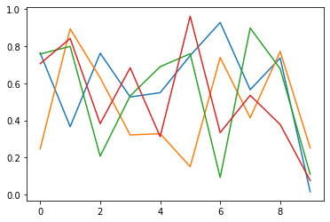
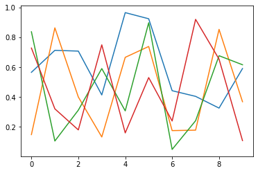
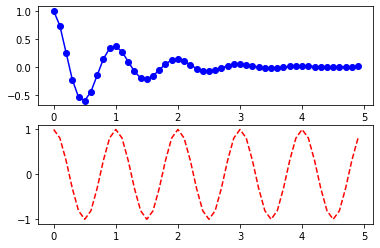
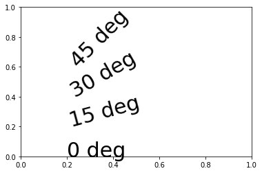
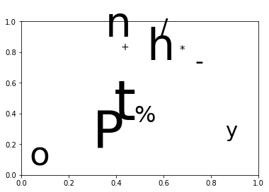
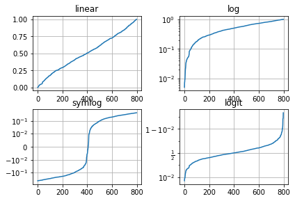
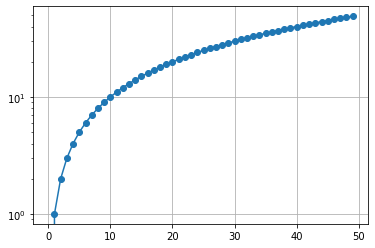
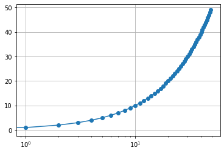
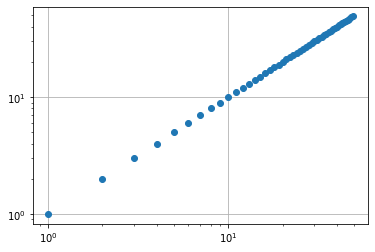

Text¶
import matplotlib.pyplot as plt
import numpy as np
fig = plt.figure()
<Figure size 432x288 with 0 Axes>
ax = fig.add_subplot(111)
ax
<AxesSubplot:>
ax.plot([2], [1], 'o')
plt.show()
y = [3, 5, 4, 6, 2]
plt.plot(y, 'o-')
t = plt.text(1, y[1], 'text', style='italic')
t = plt.text(2, y[2], 'boxed italics text in data coords', style='italic',
bbox={'facecolor': 'green', 'alpha': 0.5, 'pad': 10})

fig, ax = plt.subplots()
plt.text(0.2, 0.2, 'text')
Text(0.2, 0.2, 'text')
plt.figure()
<Figure size 432x288 with 0 Axes>
<Figure size 432x288 with 0 Axes>
Subplots¶
plt.subplots()
(<Figure size 432x288 with 1 Axes>, <AxesSubplot:>)

plt.subplots(2, 2)
(<Figure size 432x288 with 4 Axes>,
array([[<AxesSubplot:>, <AxesSubplot:>],
[<AxesSubplot:>, <AxesSubplot:>]], dtype=object))
Labels¶
plt.subplots()
plt.title('Title')
plt.xlabel('xlabel')
plt.ylabel('ylabel')
plt.ylim(-1, 2)
plt.xlim(-2, 2)
plt.text(0, 0, 'origin', fontsize=30)
Text(0, 0, 'origin')

OO-Style¶
x = np.linspace(0, 2, 100)
# Note that even in the OO-style, we use `.pyplot.figure` to create the figure.
fig, ax = plt.subplots() # Create a figure and an axes.
ax.plot(x, x, label='linear') # Plot some data on the axes.
ax.plot(x, x**2, label='quadratic') # Plot more data on the axes...
ax.plot(x, x**3, label='cubic') # ... and some more.
ax.set_xlabel('x label') # Add an x-label to the axes.
ax.set_ylabel('y label') # Add a y-label to the axes.
ax.set_title("Simple Plot") # Add a title to the axes.
ax.legend(); # Add a legend.

pyplot-Style¶
x = np.linspace(0, 2, 100)
plt.plot(x, x, label='linear')
plt.plot(x, x**2, label='quadratic')
plt.plot(x, x**3, label='cubic')
plt.xlabel('x label')
plt.ylabel('y label')
plt.title('Simple Plot')
plt.legend();

x = range(5)
y = [2, 4, 3, 5, 1]
plt.bar(x, y)
plt.text(0, 2, 'text')
plt.text(3, 5, 'max')
plt.text(4, 1, 'min')
Text(4, 1, 'min')
Enregistrer vers un fichier¶
plt.plot(np.random.rand(10, 4))
plt.savefig('demo.png')

plt.plot(y)
plt.title('demo')
plt.axis([0, 4, 2.5, 5.1])
(0.0, 4.0, 2.5, 5.1)
plt.subplot()
plt.grid()
plt.axis([-1, 1, 0, 2])
(-1.0, 1.0, 0.0, 2.0)

np.arange(5)
array([0, 1, 2, 3, 4])
n = 50
x, y = np.random.randn(2, n)
r = np.random.randint(10, 200, n)
plt.scatter(x, y, r, c=r)
<matplotlib.collections.PathCollection at 0x7fce32ca9880>
def f(t):
return np.exp(-t) * np.cos(2*np.pi*t)
t = np.arange(0.0, 5.0, 0.1)
plt.subplot(211)
plt.plot(t, f(t), 'bo-')
plt.subplot(212)
plt.plot(t, np.cos(2*np.pi*t), 'r--')
plt.show()

plt.figure()
plt.plot(*np.random.rand(40, 2))
plt.title('Easy as 1, 2, 3', fontsize=20, color='blue')
t = plt.xlabel('my data', fontsize=14, color='red')

Random text¶
plt.subplot()
for c in 'Python %/*-+':
plt.text(*np.random.rand(2), c, fontsize=np.random.randint(10, 80))

plt.subplot()
for c in 'Python is a nice language'.split():
plt.text(*np.random.rand(2), c, fontsize=np.random.randint(10, 50))

t = np.linspace(0, 5, 100)
plt.plot(t, np.sin(2*t))
plt.annotate('local max', xy=(1, np.sin(2)), xytext=(2, 1.5),
arrowprops=dict(facecolor='red', shrink=0.05))
plt.ylim(-2, 2)
(-2.0, 2.0)
len(t)
100
# Fixing random state for reproducibility
np.random.seed(19680801)
# make up some data in the open interval (0, 1)
y = np.random.normal(loc=0.5, scale=0.4, size=1000)
y = y[(y > 0) & (y < 1)]
y.sort()
x = np.arange(len(y))
# plot with various axes scales
plt.figure()
# linear
plt.subplot(221)
plt.plot(x, y)
plt.yscale('linear')
plt.title('linear')
plt.grid(True)
# log
plt.subplot(222)
plt.plot(x, y)
plt.yscale('log')
plt.title('log')
plt.grid(True)
# symmetric log
plt.subplot(223)
plt.plot(x, y - y.mean())
plt.yscale('symlog', linthresh=0.01)
plt.title('symlog')
plt.grid(True)
# logit
plt.subplot(224)
plt.plot(x, y)
plt.yscale('logit')
plt.title('logit')
plt.grid(True)
# Adjust the subplot layout, because the logit one may take more space
# than usual, due to y-tick labels like "1 - 10^{-3}"
plt.subplots_adjust(top=0.92, bottom=0.08, left=0.10, right=0.95, hspace=0.25,
wspace=0.35)

y = np.arange(50)
plt.plot(y, 'o-')
plt.grid()
plt.yscale('log')

y = np.arange(50)
plt.plot(y, 'o-')
plt.grid()
plt.xscale('log')

y = np.arange(50)
plt.plot(y, 'o')
plt.grid()
plt.xscale('log')
plt.yscale('log')

r = np.arange(0, 2, 0.01)
theta = 2 * np.pi * r
fig, ax = plt.subplots(subplot_kw={'projection': 'polar'})
ax.plot(theta, r)
ax.set_rmax(2)
ax.set_rticks([0.5, 1, 1.5, 2]) # Less radial ticks
ax.set_rlabel_position(-22.5) # Move radial labels away from plotted line
ax.grid(True)
ax.set_title("A line plot on a polar axis", va='bottom')
Text(0.5, 1.0, 'A line plot on a polar axis')